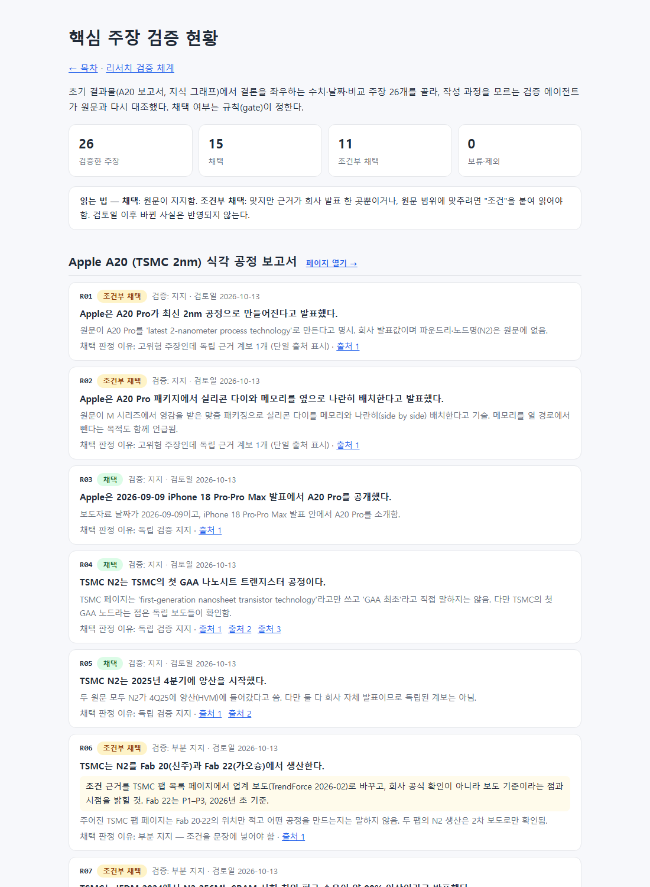

항목 #48 · 2026-10-12 06:49 ~ 06:53 · 커진 사이트의 정보 구조·데이터 생성 경로·검증 범위를 다시 설계한다.
#48
프로젝트 전체 구성 검토 · 재정비 계획
지시 (원문)
이제 이 프로젝트의 전체 구성에 대해 고민해줘.
분석 (Claude의 정리)
결과물이 14개로 늘었는데 목차는 최근순 나열뿐이다. 학습 순서와 주제 묶음이 없다.
데이터가 HTML 안에 박혀 있다: 지식 그래프 232KB 등. 그래프·용어집 갱신은 저장소 밖 임시 스크립트 29개가 HTML을 정규식으로 고쳐 왔다 → 다시 만들 수 없다.
용어가 세 곳에 흩어져 있다: 그래프 용어집 254개, 다른 페이지의 용어 사전, OES 화학종. 검증 체계는 #39 이후 작업에만 적용됐고, 초기 보고서·학습 노트·그래프에는 주장 장부가 없다.
그 밖: 그래프 페이지 제목이 아직 "Apple A20 …"인데 내용은 플라즈마·패터닝·OES까지 넓어졌다. 스크린샷이 20MB(PNG)다. 작업 규칙 문서는 12.6KB로 규칙과 사용법이 섞여 있다. 일부 자료의 공개 범위가 아직 정해지지 않았다.
"고민해줘"이므로 이번에는 진단과 계획까지 한다. 실행은 사용자 결정 후에 한다.
과정
현황 측정: 저장소 파일 크기, 목차 구성, 임시 스크립트 수(29), 스크린샷 65장 20.1MB(JPEG 변환 시 약 8.5MB), 공개 페이지의 주장 ID 연결 0건.
개선안 7개를 정리해 astra(xhigh)에 비평 요청(백그라운드). 개선안: 영역별 목차, 데이터 원본 분리 + 빌드 도구, 용어 단일 등록부, 검증 소급, 공개 범위 정리, 운영 정리, 그래프 이름.
jev 자문 4건
· 가장 먼저 할 일 → 데이터 원본 분리(선택 b, 확률 0.54, 신뢰도 0.42 — 낮음)
· URL 유지 → 0.46(애매)
· 공개 범위 조치는 사용자 결정 → 0.70
· 이번 대응 → "위험 낮은 것은 바로 실행" 0.57 대 "제안만" 0.43
마지막 판단은 반영하지 않았다: 지시가 검토 요청이고, astra도 1순위를 사용자 결정 사항(공개 범위)으로 꼽았기 때문이다.
astra 비평 수신.
· 방향은 타당하다. 순서는 "공개 범위 확정 → 재현 가능한 생성 경로 → 핵심 주장 검증 → 탐색 개선 → 운영·성능".
· 줄일 것: 허브 페이지 5개 대신 목차 안 5개 섹션. 용어 사전 전체를 한 번에 정규화하지 말 것. 이미지 변환만 하려고 이력을 재작성하지 말 것.
· 더할 것: 페이지 목록(pages.json)과 가벼운 검색. 페이지 전체 배지 대신 주장별 상태·검토일. "한 표기 = 한 ID"가 아니라 "한 개념 = 한 ID". 구조 이관과 내용 수정은 따로 커밋. 새 clone에서 한 명령으로 재생성되는지를 완료 기준으로.
모두 계획에 반영했다.
재현 가능한 생성 경로: kb/ 원본 JSON + tools/build_site.py. 그래프·용어집 → OES 순서. 완료 기준: 새 clone에서 한 명령으로 재생성.
핵심 주장 20~30개 검증 소급: 주장별 상태·검토일 표시
목차 5개 섹션 + 학습 경로 + 가벼운 검색: 학습 경로는 플라즈마 원리 → 식각 화학·OES → DPT·QPT → GAA/A20. 그래프 제목을 "식각 지식 그래프"로.
운영: 빌드·링크 자동 점검, 짧은 규칙 문서 + runbook, 성능 측정 후 최적화
#49
재정비 계획 실행 — 원본 분리·핵심 주장 재검증·목차 개편·자동 점검
지시 (원문)
순서대로 진행. 확인 필요한 건 나에게 질문해줘.
분석 (Claude의 정리)
#48 계획의 1~5단계를 순서대로 실행한다. 사용자 결정이 필요한 곳(공개 범위, 공개 저장소에 올릴 데이터)은 묻고 진행한다.
각 단계의 완료 기준은 #48에서 정한 대로 둔다. 2단계는 새 복제본에서 명령 하나로 같은 결과가 나와야 하고, 3단계는 주장마다 상태와 검토일이 보여야 하며, 4단계는 모든 공개 자료에 목차에서 닿을 수 있어야 하고, 5단계는 변경마다 자동 점검을 통과해야 한다.
새 자문은 따로 받지 않고 #48의 astra·jev 자문과 사용자 답을 기준으로 삼았다. 사실 검증은 독립 검증 에이전트가 맡았다.
과정
#48에 배포 확인 줄을 추가했다.
1단계(공개 범위): 사용자에게 질문해 결정을 받았다. 교재 기반 노트의 요약 표는 그대로 둔다. 나머지 결정과 처리 내용은 공개 기록 범위 밖이라 여기 적지 않는다.
2단계(원본과 결과물 분리): 그래프 페이지의 데이터 상수 8개를 Node.js로 그대로 계산해 꺼냈다. 이것을 kb/graph/의 JSON 4개(노드·관계·출처·분류)와 페이지 틀 tools/templates/로 나눴다. 노드별 출처·영역과 관계별 근거 글은 각 항목 안으로 합쳤다. 생성 도구 tools/build_site.py는 중복 id, 없는 분류·영역·출처, 끊어진 관계를 검사한다.
사용자 질문: OES 페이지 입력은 비공개 저장소 데이터다. 결정은 "외부 폴더 의존 유지"였다. OES 페이지는 build에 넣지 않고 기존 결과물을 그대로 둔다.
같은지 확인: 다시 만든 그래프 페이지의 데이터 8종이 원래 값과 모두 같다(SOURCES는 키 순서만 다르고, 순서를 쓰는 코드가 없음). 데이터 블록 밖의 HTML은 글자 하나까지 같다. 질의응답 페이지는 바이트 단위로 같다.
구조 이관만 따로 커밋했다. 저장소를 새로 복제해 build_site.py --check를 실행하니 통과했고, 다시 생성해도 내용 차이는 0이었다. 첫 시도에서는 줄바꿈 문자(LF/CRLF)만 달라 표시되어, 출력이 운영체제 기본 줄바꿈을 따르도록 고쳤다.
3단계(핵심 주장 재검증): A20 보고서에서 12개, 지식 그래프에서 14개, 모두 26개 주장을 골라 장부 ledger/retro_core.json에 올렸다. 결론을 좌우하는 수치·날짜·비교 주장이다. lint 결과 오류 0, 경고 2(NA 값에 조건이 없음). 출처 18개 확인: 정상 14, 자동 접근 차단 2, 시간 초과 2.
blind 입력을 세 묶음으로 나눠 claim-verifier 에이전트 3개에 동시에 맡겼다. 에이전트는 웹만 쓰고 작성 과정은 모른다. 3번 묶음 입력에서 G14의 근거 URL을 잘못 옮겼는데, 검증자가 이를 "근거 위치가 다름"으로 짚고 맞는 출처를 따로 찾아 부분 지지로 판정했다.
4단계(탐색) — 검증 결과를 기다리는 동안 진행: 목차를 kb/pages.json에서 생성하도록 바꿨다.
· 영역 5개: 기초 원리 / 공정 리서치 / 지식 베이스 / 3D로 보기 / 방법론·기록.
· 학습 경로 4단계: 플라즈마 원리 → 식각 화학·OES → 멀티패터닝 → GAA·A20. 단계마다 읽을거리와 3D 모형을 붙였다.
· 검색: 자료 15개와 그래프 용어 254개. 용어를 누르면 그래프의 해당 노드로 이동한다.
· 그래프 페이지 제목을 "식각 지식 그래프 · 용어집"으로 바꿨다. 주소는 그대로다.
· 브라우저 확인: "쉬스" 검색 → 쉬스 관련 용어 3개와 플라즈마 원리 노트, "채널 릴리스" 검색 → 3D 페이지와 용어. 자료 링크 14개(검증 현황 추가 전) 모두 표시.
판정 26건을 기록한 뒤 gate 결과는 채택 15 · 조건부 채택 11 · 보류·제외 0이다. 조건부의 대부분은 근거가 회사 발표 한 곳뿐인 고위험 주장이다. 부분 지지는 5건이다.
· R06: Fab 20·22의 N2 생산은 업계 보도로만 확인된다.
· R07: TSMC 표기는 "~>90%"이고 평균·최고 구분이 없다.
· G01: "동일 전력" 조건은 2차 보도에만 있다.
· G09: 2025년 출하는 샘플 출하다.
· G14: 근거를 바꾸고 상용 장비 기준으로 한정해야 한다.
5단계(운영): 내부 링크·앵커 검사 tools/check_links.py를 만들었다. 첫 실행에서 3D 페이지의 상태 주소(#step=4&…) 4개를 앵커로 잘못 읽어, 값이 있는 주소 조각은 건너뛰게 고쳤다. 결과는 페이지 27개, 문제 0이다. GitHub Actions site-check는 푸시마다 build 일치와 링크 검사를 돌린다.
지적을 반영해 내용을 고쳤다.
· A20 보고서: Fab 20·22를 "확인"에서 "업계 보도 기준"으로 낮췄다. 시험 칩 수율에는 TSMC 표기와 다른 보도의 구분을 함께 적었다.
· 그래프 High-NA 노드: "일부 제품의 선택 레이어"로 좁혔다.
· tools/claims_export.py(장부 → 공개용 kb/claims/)와 검증 현황 페이지를 만들었다. 주장마다 상태·검증 판정·조건·검토일·확인한 출처를 싣고, #R07처럼 바로 링크할 수 있다.
· 보고서와 그래프에 재검증 안내와 링크를 넣었다.
작업 규칙 문서를 나눴다. 규칙은 CLAUDE.md(13.6 → 11.3KB)에 남기고, 명령·사용법은 docs/runbook.md로 옮겼다. 목차가 생성 파일이 되었으므로 "새 결과물은 kb/pages.json에 추가" 규칙을 넣었다.
성능 측정: 압축 전송량은 목차 4KB, 질의응답 87KB, 그래프 73KB로 충분히 작다. 기록 페이지는 이미지를 한꺼번에 받는다(8단계 21장 9.8MB, 7단계 3.1MB). 그래서 모든 기록 이미지에 지연 로딩(loading="lazy")을 넣었다. PNG 변환이나 이력 재작성은 하지 않았다(#48 astra 권고).
커밋·푸시 → GitHub Actions site-check 통과(build 일치·링크 검사), Pages 빌드 완료. <계정>.github.io/etch-paper-study/의 목차·검증 현황·그래프·11단계 기록 모두 200 확인.
결과 / 증거
성공 재정비 계획 5단계를 마쳤다. 단, OES 페이지는 사용자 결정에 따라 생성 경로 밖에 둔다.
재현: 저장소를 새로 복제한 뒤 python tools/build_site.py 한 번으로 목차·그래프·질의응답·검증 현황 4개 페이지를 다시 만든다.
history_img/20261013_004403_index_sections.png — 새 목차: 검색 창, 영역 바로가기 5개, 학습 경로 4단계, 영역별 자료 카드

history_img/20261013_004750_claims_status.png — 핵심 주장 검증 현황: 26개 중 채택 15·조건부 11. 주장마다 상태·검증 판정·조건·검토일·출처
#50
지식 그래프 HKMG 노드의 논문·출처 적절성 검토
지시 (원문)
식각 지식 그래프 중 HKMG의 논문 및 출처의 적절성 검토
분석 (Claude의 정리)
HKMG 게이트 노드에 달린 출처가 각 설명 문장을 실제로 뒷받침하는지 확인한다. 같은 출처를 쓰는 주변 노드(high-k 절연막, 일함수 금속, ALD, 게이트 금속 선택 제거·리세스)도 함께 본다.
맞지 않으면 1차 근거(논문·리뷰)를 찾고, 문장을 근거 범위에 맞게 좁힌다. 그다음 기존 검증 절차(장부 → 독립 검증 → gate)를 거쳐 그래프 원본(kb/graph/)에 반영한다.
과정
현재 상태를 확인했다. HKMG·high-k·일함수 금속·ALD 노드의 출처는 장비 회사의 ALD 제품 소개 페이지(s14) 하나뿐이었다. 게이트 금속 선택 제거·리세스 노드도 같은 페이지와 원자층 식각 일반 해설(s15)만 출처로 갖고 있었다.
s14 본문을 확인했다. "FinFET·GAA용 ALD 장비가 HKMG 일함수 금속·다이폴층을 증착한다"는 내용만 있었다. 다음 내용은 이 페이지가 뒷받침하지 않는다.
· 대체 게이트(RMG) 방식, 충진 금속
· high-k로 Hf 계열을 쓴다는 점
· 일함수 금속 선택 제거·리세스 식각과 high-k 보호
s15도 원자층 식각 일반론이었고 게이트 금속 리세스는 다루지 않았다. 판단: 출처가 부적절함. 제품 페이지는 "ALD 장비가 쓰인다"는 보조 근거로만 남기기로 했다.
후보 출처를 따로 모았다. 두 경로는 서로의 결과를 보지 않았다.
· paper-scout 에이전트: 중립 질문만 주었고 31개 후보를 받았다.
· astra(high, 백그라운드): 문장 6개(A–F)별로 1차 근거와 지지 범위를 물었다.
· lit_search.py: 메타데이터를 검색했다.
두 경로가 같은 핵심 문헌을 꼽았다: Intel 45nm IEDM 2007(Mistry 외), Robertson·Wallace 리뷰(2015), IBM 적층 나노시트 VLSI 2017(Loubet 외). astra 지적 반영:
· Intel 45nm은 "high-k 먼저, 금속 게이트 나중" 방식이다.
· HKMG가 곧 RMG인 것은 아니다.
· 일함수 금속 제거는 multi-Vt를 만드는 여러 방법 중 하나다.
장부 ledger/hkmg_review.json(비공개)에 주장 10개(H01–H10)를 범위를 좁혀 적었다. lint 오류 0. check_refs로 DOI 9개가 실재함을 확인했다(제품 페이지는 403).
작성 과정을 모르는 claim-verifier 2개에 blind 입력만 5개씩 넘겼다. 검증자는 doi 원문(IEEE·Elsevier)을 대부분 열지 못해 초록·공개 사본·2차 자료로 판정했다. 그 외 지적:
· H01: 인용 근거가 충진 금속을 명시하지 않는다.
· H06: 습식 식각이 어려운 원인으로 원문이 든 것은 "시트 간격이 좁아서"가 아니라 "넓은 시트에서 시트 사이에 끼인 금속의 높은 종횡비"다.
· H07: IEDM 2017 원문은 열지 못했고, 같은 회사 특허로만 확인됐다.
· H09: 인용한 두 근거로는 확인되지 않아 특허로 확인했고, 근거 교체를 권고했다.
그래프 원본을 고쳤다(kb/graph/nodes.json·sources.json).
· HKMG: 충진 금속을 "보통"으로 한정했다. RMG 형성과 Intel 45nm(2007) 양산 첫 보고의 방식을 적었다. 식각 관점에서는 "시트 사이 리세스"라는 잘못 섞인 표현을 "시트 사이 = 일함수 금속 선택 제거, 게이트 위쪽 = 리세스 후 절연 캡"으로 나눴다. 출처는 논문 3개로 바꿨다.
· high-k: Hf 계열 예시와 "금속 대 high-k 식각 선택비" 요구를 적고 논문 출처를 붙였다.
· 일함수 금속: 선택 제거 후 다른 금속으로 교체, 그리고 습식 제거의 어려움을 적었다. 원인은 검증자 지적대로 시트 간격으로 단정하지 않았다.
· ALD: 시트 둘레·사이에 HfO2·TiN을 입힌 사례 논문을 추가했다.
· 게이트 금속 선택 제거·리세스: 절연 캡(SiN 등)을 적고 검증자가 확인한 특허를 출처로 바꿨다. 자기정렬 컨택 노드에도 같은 특허를 추가했다.
· H07(시트 간격이 문턱전압에 영향)은 같은 회사 근거뿐이라 그래프에 넣지 않았다.
claims_export.py로 공개용 상태(kb/claims/hkmg_review.json)를 만들었다. 검증 현황 페이지(주장 26 → 36)와 그래프 안내 문구를 고친 뒤 build했다. build_site.py --check는 일치, 링크 검사는 27개 페이지 문제 0.
기록 단계를 jev에게 물었다(9단계 / 11단계 / 새 12단계). jev는 11단계를 골랐다(확률 0.56, 새 단계 0.42, 신뢰도 0.34). 그대로 따랐다.
커밋·푸시 → GitHub Actions site-check 통과, Pages 빌드 완료. <계정>.github.io/etch-paper-study/의 그래프·검증 현황(H01–H10 10개 확인)·11단계 기록·스크린샷 모두 200 확인.
결과 / 증거
성공 HKMG 노드의 기존 출처는 설명의 대부분을 뒷받침하지 못했다(장비 제품 페이지 1개). 이 노드와 주변 4개 노드의 출처를 논문·리뷰 중심으로 바꾸고 문장을 근거 범위로 좁혔다.
새 출처 7개:
· Intel IEDM 2007, Robertson·Wallace 2015 리뷰, IBM VLSI 2017
· AVS 2021 초록, J. Electrochem. Soc. 2006, Micromachines 2023
· SAC 캡 특허 1건
검증: 주장 10개 중 채택 5, 조건부 5. 조건부 주장은 조건을 문장에 넣었고, 근거가 약한 1개는 그래프에 넣지 않았다.
남은 한계: IEEE·Elsevier 원문은 유료여서 일부 판정은 초록·공개 사본 기준이다. 일함수 금속 제거 관련 나노시트 근거는 IBM 계열에 몰려 있다.
이 프로젝트에서 레퍼런스로 삼은 논문들에 대해 요약본을 만든 뒤 참고하는 링크 연결 가능해?
논문 먼저.
분석 (Claude의 정리)
가능 여부를 먼저 답했다. 대상(DOI 기준 약 29편, 웹 자료 447개, 특허 16건)을 세어 만드는 방식(kb/papers 원본 → 요약 페이지 생성 → 기존 논문 링크 옆 "요약" 연결 → CI 점검)과 조건(유료 논문은 초록 기준, 재서술, 핵심 문장 독립 검증)을 제안했고, 범위는 "논문 먼저"로 정해졌다.
요약도 사실 주장이므로 각 요약의 핵심 문장을 기존 검증 절차(장부 → 독립 검증 → gate)로 확인하고, 요약마다 검증 상태와 "근거 범위"(공개 원문 / 초록 / 서지 정보만)를 붙인다.
과정
공개 페이지와 그래프 출처에서 논문 링크를 모았다. DOI 링크 27편에 더해, DOI 없이 저널·PMC·arXiv·J-STAGE·ScienceDirect 주소로 걸린 논문 14편과 기술 보고서 1편이 나왔다. NIST 스펙트럼 표는 논문이 아닌 데이터베이스라 제외했다. 주소만 있던 것은 PMC ID 변환, 제목 검색으로 DOI를 찾았다. 합계 43편.
OpenAlex에서 초록·공개 원문 여부를, 초록이 없던 4편은 웹 검색으로 찾았다. 1편(Turban 1989)은 초록을 찾지 못해 "서지 정보만"으로 표시했다. 초록은 비공개 작업 폴더에만 두고 공개 결과물에는 옮기지 않았다.
요약 원본 kb/papers/papers.json을 썼다. 논문마다 영역(5개), 종류, 근거 범위, 2~3문장 요약, 핵심 결과, "이 프로젝트에서" 쓰인 이유, 검증용 핵심 문장. 처음에 권·쪽 번호 일부를 기억으로 적었는데 Crossref와 대조해 보니 틀린 것이 있었다(SPIE 권 번호 2건, 쪽 1건 등). 모두 Crossref 값으로 바꿨다.
장부 ledger/papers_summary.json(비공개)에 핵심 문장 43개를 올렸다. lint 오류 0. 작성 과정을 모르는 claim-verifier 4개에 blind 입력만 11·11·11·10개씩 넘겼다.
그동안 도구를 만들었다.
· tools/paper_links.py: 논문 주소 인식, "요약" 링크 넣기(apply), OES 페이지 반영(oes), 빠진 곳 검사(check).
· tools/papers_page.py: 요약 페이지 생성. 쓰인 곳(그래프 노드·페이지)은 원본에 적지 않고 매번 계산.
· build_site.py에 요약 페이지·검색 항목(논문 43개)·검증 현황 절을 추가하고, 그래프 출처 목록에 "요약" 링크를 넣었다.
검증 결과를 기록했다. gate: 채택 39, 조건부 채택 4, 보류·제외 0. 지적에 맞춰 요약 문장을 고쳤다.
· Pieczulewski 2009: 시간당 200장은 실측이 아니라 모델링 값, 장비 회사 발표.
· Durfee 2021: 지운 금속은 희생 pFET 일함수 금속, 완전 제거는 넓은 시트 기준, 학회 발표 초록.
· Yang 2023(채널 릴리스): 소스·드레인 응력이 "주원인"이 아니라 "중요한 역할".
· Yang 2023(BDI): 구동 전류 4.78배는 PMOS만.
· 그 밖에 Kwon 2021의 "bowing 폭"을 원문대로 "bowing CD"로, Gunay-Demirkol 저자명, Krištof의 저널 정보를 고쳤다.
연결: DPT·QPT 보고서 23곳, OES 페이지(정적 표 + 조합 표 출처 4종), 그래프 노드 출처 70곳에 "요약" 링크가 붙었다. OES 페이지는 원래 생성 입력(검증 메모)이 이 세션에 없어 다시 만들지 않고 같은 처리를 결과물에 적용했고, oes_page.py도 저장 전에 같은 처리를 하도록 고쳤다. 검증 근거 링크만 있는 검증 현황 페이지는 대상에서 뺐다.
목차(kb/pages.json)에 "레퍼런스 논문 요약"을 추가하고, CI에 paper_links.py check 단계를 넣었다. 규칙(CLAUDE.md)과 docs/runbook.md에 "새 논문을 인용하면 요약 추가 → 검증 → build"를 적었다. build_site.py --check 일치, 링크 검사 28개 페이지 문제 0, 요약 연결 빠진 곳 0.
기록 단계를 jev에게 물었다(11단계 / 새 12단계 / 9단계). jev는 11단계를 골랐다(확률 0.84, 신뢰도 0.76).
커밋·푸시 → GitHub Actions site-check 통과(새 단계 "논문 링크마다 요약 연결" 포함), Pages 빌드 완료. <계정>.github.io/etch-paper-study/의 요약 페이지(카드 43개 확인)·그래프·DPT·QPT 보고서·OES·목차·11단계 기록 모두 200 확인.
결과 / 증거
성공 레퍼런스 논문 43편의 요약 페이지를 만들고, 그래프·보고서·OES 표의 논문 링크에서 요약으로, 요약에서 다시 쓰인 노드·페이지로 오갈 수 있게 했다.